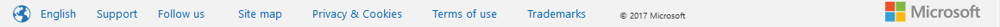

用超文本语言写作时，将内容和风格分开是很重要的。样式应该隐藏在层叠样式表（CSS）中。
让我们看看几个有趣的标签，它们作为这条规则的例外而存在，并最终在HTML5中得到了纠正。
- [p]这个文本是 [i]斜体的[/i]。 它使用“i”标签。[/p]
- [p]这个文本也是[em]斜体的[/em]. 。它使用“em”标签![/p]
- [p]这个文本以 [b]粗体显示[/b]。它使用“b”标签!
- [p]这个文本也是以[strong]粗体显示[/strong]。它使用“strong”标签!
输出：
- This text is in Italics. It uses the i tag
- This text is also in Italics. But it uses the em tag!
- This text is in Bold. It uses the b tag
- This text is also in Bold. But it uses the strong tag!
两个标签在HTML中做同样的事情似乎是多余的。虽然[b]和[strong]，[i]和[em]在普通的网络浏览器中似乎没有什么不同，但它们之间有一个重要的区别。
样式标签与语义标签
我们在上面看到的四个标签可以分为样式标签和语义标签。
HTML4中的Style标签纯粹关注于展示和设计。它只讨论了文本在屏幕上的外观。
语义指的是一种语言中单词的意义。语义标记说明了标记的语义。它提供了意义。
| 标签 | 类型 | 标签描述 |
|---|---|---|
| [b] | 样式 | 使文本加粗 |
| [i] | 样式 | 使文本倾斜 |
| [em] | 语义 | 强调文本 在浏览器中，文本默认为斜体 |
| [strong] | 语义 | 重要文本 在浏览器中，文本默认为粗体 |
[b]与[strong]
Bold是一种使字母更粗的样式，因此它在其他文本中脱颖而出。但它没有语义含义，例如对于语音浏览器、屏幕阅读器和其他类型的访问Web的方式。像Kindle Paperwhite这样的设备，文本呈现方式不同，可能不会选择粗体。
Strong指的是事物应该是怎样的。它在浏览器中看起来像粗体，但在大声朗读文本时可能意味着“紧急或严肃地说话”。从语义上讲，我们指示它比它所围绕的文本更强大，这与在[b]的情况下给出文本应该是什么样子的指示不同。它代表内容的重要性、严肃性或紧迫性。
- [p]作为初级开发人员，您[strong]必须[/strong]提交您的工作以供代码审查！[/p]
在浏览器中，“必须”可以粗体显示。但是，当通过文本到语音程序大声阅读HTML文档时，可以用重要性或严肃性来表达。
[i]与[em]
Italics使文本倾斜。我们通常将杂志、书籍、电视节目等的名称用斜体表示，就像加粗标记一样，因为它纯粹是为了表达目的，对于不能阅读文本的人来说，它毫无意义。
Emphasis强调用于强调其内容的强调。你强调的句子中的单词可以改变整个意思。试着大声朗读下面的句子，着重强调强调的单词：“你”和“商店”。
你得去商店。
不是我。那是你的工作！
你得去商店。
去商店。不是商场。
HTML5的变化
到目前为止，我们已经了解了这些标签在HTML4中是如何使用的。在本单元开始时，我们了解到内容和样式应该分开，样式应该隐藏在级联样式表中。那么，[i]和[b]这两个纯粹的风格元素是如何被切割的呢？
它们最初被弃用，然而，在HTML5中，它们又被带回来了。这一次，具有语义意义。
| [i] | 除了斜体文本，它现在还用于不同语气或声音的文本，例如外来词、思想或技术术语。 | [p]This restaurant has a breakfast buffet and a four course [i lang="fr"]À la carte[/i] dinner.[/p] |
| [b] | 除了粗体文本，它现在还被用作一种文体补偿，例如文档中的关键字、产品名称或动作词，但不使它们变得重要。它也可以用作列表项中的标题。 | [p]The owner of this [b]rabbit[/b]and [b]hamster[/b] needs to step forward.[/p] |
从HTML5开始，[em]现在也用于发音不同的单词和句子。它不是用来表达重要性的。为此，您应该使用[strong]。
您可以同时嵌套[em]和[strong]。两个[em]表示对内容的压力/强调程度高于一个[em]。
你还应该记住，[b]和[i]可能无法为世界上的某些地区提供合适的造型。例如，汉字非常复杂，他们通常喜欢下划线而不是粗体，因为粗体字使阅读文本变得太困难。
如果您确实使用[b]或[i]标记，HTML5规范建议您也使用类属性来标识标记的语义意图。这对于被翻译的页面尤其重要，因为样式不一定映射到不同文化中的相同语义类别。有关更多信息，请使用[b]和[i]元素阅读本文。
知识测验
在这种情况下，应该使用以下哪些标签？
[...] 你得马上离开。你的办公室被窃听了！[…]
2.3.2语义元素导论
HTML语义是一种HTML，它关注网页中信息的含义，而不是其表示或外观。
什么是语义元素？
如果要添加段落，可以使用段落标记。如果要添加标题，可以使用标题标签[h1]-[h6]，要添加图像，可以使用图像标签（我们将在本模块后面了解这一点）。所有这些标记及其id和类属性都是语义的，因为它们表明了标记中内容的用途[i] 而且[b]对内容没有任何建议，这就是为什么它们被认为语义不够，最初被弃用的原因。
使用正确的标签
从语义HTML的角度来看，使用正确的标记很重要。你应该使用[blockquote]来包装引号，而不是使用段落标记，然后将其样式设置为引号。你应该使用[em]来强调内容的一部分，而不仅仅是将文本斜体化。出于演示目的，可以使用CSS实现同样的效果。事物的外观与它的含义关系不大。这就是为什么在HTML中，我们将内容和样式分开。
为什么它很重要？
语义元素对开发者和浏览器都是有益的。它们传递了更多关于HTML文档内容和结构的信息。语义HTML中有一个名为header的标记。当你看到像[h1]或[h2]这样的标题时，你知道这可能是一个新的小节或主题的开始。任何编程语言都欢迎交流。
对于能够更好地理解标记结构的开发人员来说，这种额外的交流非常有用（当您在一年后回到代码中，或者将其传递给同事时，这将对您和他们有很大帮助！）。对于浏览器，它可以更好地区分不同类型的数据，从而在不同的设备中更好地显示内容。辅助技术，如屏幕阅读器，将根据语义阅读内容并传达有关内容的信息，例如，识别标题并以不同的语调阅读。
自成立以来，W3C一直在努力使HTML尽可能具有语义。HTML5带来了一系列新的语义元素。
网页结构
让我们看看一个典型的网页结构，它由以以下名称命名的块组成：header, nav, article, section, aside and footer(页眉、导航、文章、节、旁白和页脚。)

HTML5中特别引入了[article]、[section]、[header]、[nav]和[footer]等标签来定义网页结构。这些新的语义元素赋予网页的不同部分以意义。当你进行搜索时，搜索引擎会自动处理数以百万计的HTML页面进行扫描，并为你提供最合适的内容。
每一部分都是指本文件的一部分：
- header可以是整个文档或单个章节的起点。它通常包含引言。
- nav指的是导航。它可以包含一组导航链接，比如一本书的目录。
- section是指文档中的节。例如，一份关于植物的文件可以在多年生植物、一年生植物、土壤类型等标题下包含几个部分。
- aside是指与主要内容不同的内容。例如，在一篇关于意大利翁布里亚地区一位年轻建筑师的文章中。旁边可能是一个小边栏，上面有关于翁布里亚的信息，比如地理细节和人口。
- article这篇文章指的是独立的内容。如果一篇文章是从文档中提取出来的，那么它本身就应该是有意义的。文章、博客帖子、常见问题（FAQ）都是独立内容的例子。
- footer包含典型的页脚信息，如创作、版权和联系信息。
这些语义元素的使用改进了文档的自动化处理。当它扫描一个[nav]标签时，它自动知道它包含与页面导航相关的内容，或者一个标题指示介绍性内容。它提供了跨多个网页的结构和一致的行为，为浏览器提供了更简单、更直接的信息，使他们的生活更轻松。它还提高了网页的可访问性。辅助技术依靠文档的结构向用户呈现信息。如果屏幕阅读器能够正确确定文档的结构，那么它可以更无缝地读取文档，避免不相关的信息或重复内容。
我们可以将上图中的元素应用于以下简单网页：
- [!DOCTYPE html]
- [html]
- [head]
- [meta charset="UTF-8"]
- [title]语义元素导论[/title]
- [/head]
- [body]
- [header]
- [h2]使用标记验证程序。[/h2]
- [/header]
- [nav][!--您将在本章后面了解[a]标记--]
- [a href=""]什么是标记验证器，它做什么？[/a][br /]
- [a href=""]为什么要验证？[/a][br /]
- [a href=""]如何使用标记验证程序？[/a][br /]
- [a href=""]有很多错误信息吗？不要惊慌。[/a][br /]
- [/nav]
- [section]
- [h3]什么是标记验证器，它做什么？[/h3]
- [p][a href="https://validator.w3.org/docs/help.html#validation_basics"]Markup Validator[/a]是一个免费的工具和服务，用于验证标记：换句话说，它检查以HTML等格式编写的Web文档的语法。[/p]
- [/section]
- [section]
- [h3]为什么要验证？[/h3]
- [p] 计算机编程的一条重要格言是：“生产的东西要保守，接受的东西要自由。”[br] 浏览器遵循这条准则的后半部分，接受网页并尝试显示它们，即使它们不是合法的HTML。问题是，不同的浏览器（甚至同一浏览器的不同版本）会对同一非法构造做出不同的猜测。。。[/p]
- [/section]
- [article]
- [h3]如何使用标记验证程序？[/h3]
- [p]最有可能的情况是，您希望使用在线标记验证服务。使用此服务验证网页的简单方法是将其地址粘贴到[a href="https://validator.w3.org/#uri"]文本区[/a]上[a href="https://validator.w3.org/""]验证程序主页[/a]，然后按“检查”按钮。[/p]
- [/article]
- [aside]
- [h3]有很多错误信息吗？不要惊慌。[/h3]
- [p] 不要惊慌。验证器是否抱怨您的DOCTYPE声明（或缺少声明）？确保您的文档具有语法正确的DOCTYPE声明，如DOCTYPE部分所述，并确保它正确标识您正在使用的HTML类型。然后再次通过验证程序运行它；如果幸运的话，你应该少犯很多错误。如果这没有帮助，那么您可能正在经历级联故障。。。[/p]
- [/aside]
- [footer]
- [p]作者：W3C[/p]
- [p]欲了解更多信息，请访问[a href="https://validator.w3.org/docs/help.html"]此页[/a].[/p]
- [/footer]
- [/body]
- [/html]
输出：
使用标记验证程序。
什么是标记验证器，它做什么？
Markup Validator是一个免费的工具和服务，用于验证标记：换句话说，它检查以HTML等格式编写的Web文档的语法。
为什么要验证？
计算机编程的一条重要格言是：“生产的东西要保守，接受的东西要自由。”
浏览器遵循这条准则的后半部分，接受网页并尝试显示它们，即使它们不是合法的HTML。问题是，不同的浏览器（甚至同一浏览器的不同版本）会对同一非法构造做出不同的猜测。。。
如何使用标记验证程序？
最有可能的情况是，您希望使用在线标记验证服务。使用此服务验证网页的简单方法是将其地址粘贴到文本区上验证程序主页，然后按“检查”按钮。
知识测验
2.3.3HTML5语义元素
我们将在下一单元中详细阐述选定的语义元素。
| 语义元素 | 描述 | 示例 |
|---|---|---|
| [header] | 介绍整个页面或个别章节、文章、导航、旁白元素。通常包含站点名称、徽标和导航。不必在页面的开头。 | [header] [h1]认真的重要性[/h1] [h3]对真与美的追求[/h3] [p]该剧由剧作家奥斯卡·王尔德于1895年创作[/p] [/header] |
| [footer] | 包括典型的页脚信息，如创作、版权、联系信息和页脚菜单。 | [footer] [p]written by：oscar wilde[/p] [p]联系信息：[a href=“mailto:oscar@wilde.com“] oscar@wilde.com[/a]。[/P] [/footer] |
| [nav] | 文档的导航链接。一个页面可以有多个 | [nav][ol] [li][a href="/act1/"]Act 1[/a][/li] [li][a href="/act2/"]Act 2[/a][/li] [li][a href="/act3/"]Act 3[/a][/li] [/ol][/nav] |
| [section] | 定义文档中的章节，如章节、标题等，通常用于无法自行理解的内容。 | [section] [h1]第一幕第一场[/h1] [p]设置在半月街阿尔吉公寓的晨间[/p] [/section] |
| [article] | 定义独立的内容，这些内容在文档之外应该是有意义的，例如报纸文章、博客帖子等。 | [article] [h1]一位博主对这篇精彩讽刺的分析[/h1] [p]这部诙谐、有时有意识的戏剧是王尔德的游乐场，可以激发他的进步情绪[/p] [/article] |
| [aside] | 除了主要内容之外的次要内容，比如侧边栏。这些不被视为主页大纲的一部分。 | [p]阿尔杰农的公寓装修豪华而艺术[/p] [aside] [h3]阿尔杰农·蒙克里夫[/h3] [p]住在伦敦时尚区的富有单身汉。他很幽默，完全不尊重社会[/p] [/aside] |
| [details] *见下面的例子 |
提供用户可以显示或隐藏的附加信息的方法。默认情况下显示给用户的内容。其他内容是隐藏的，可以展开查看。 | [details] [summary]角色成员[/summary] [p]乔治·华盛顿饰演阿尔杰农·蒙克里夫[/p] [p]罗纳德·里根饰演约翰·沃辛[/p] [/details> |
| [figcaption] *见下面的例子 |
提供图像的标题（说明）。在 |
[figure] [img src="img_cast.jpg" alt="认真的重要性"] [figcaption]图1-演员们在首映前的彩排中努力工作[/figcaption] [/figure] |
| [figure] | 包含图像，可用于与图像的标题分组 | 请参阅[figcaption] |
| [mark] *见下面的例子 |
定义要高亮显示的文本的一部分。可以理解类似银光笔效果。突出显示样式在CSS中指定。 | 车道：是的，先生。 [[mark]用托盘把三明治递给他的主人[/mark][/p] |
| [summary] | 在[details]标签中使用。指定可见内容。其余详细内容由用户显示/隐藏。 | [details] [summary]Cast Members[/summary] [p]George Washington as Algernon Moncrieff[/p] [p]Ronald Reagan as John Worthing[/p] [/details] |
[detaile]元素
[details]元素非常酷。它与[summary]标记嵌套，和其他一些内容一起使用。结果是，在摘要旁边显示一个披露三角形，而其他内容最初是隐藏的。通过单击三角形，其他内容将显示给用户。这不需要JavaScript，是获得强大且令人满意的功能的简单方法。
下面我们看到了HTML，你可以自己试一试！请注意，[details]标记在大多数Web浏览器中都有效。
另请参见当前的浏览器支持（在caniuse.com上）。
[figcaption]元素
此元素用于提供图像的标题或解释（图）。虽然alt属性解释了辅助技术的图像，但可以使用
[mark]元素
此元素用于指定要突出显示的内容。
默认情况下，大多数浏览器都会将带有黄色背景的mark元素显示为黑色文本，但如果没有，则可以在CSS中指定样式。另请参见当前的浏览器支持（在 caniuse.com上）。
语义因素的影响
如果您有机会尝试上面讨论的语义元素的例子，您会注意到语义元素通常在视觉上不具有前景。只有少数语义元素，如[mark]、[em]、[strong]和[code]为文档提供了某种视觉变化。除了为其余的文档提供结构外，不要做任何事情。
一个很好的例子是[aside]。[aside]元素用于除主内容之外的辅助内容，例如侧边栏，但它实际上不会在页面中创建侧边栏。侧边栏是一个用户界面（UI）元素，必须设置样式以实现侧边栏的外观。以下代码只会为文档创建结构，不会对其进行任何视觉更改：
鲜为人知的语义元素（可选）
注：本节是为好奇者提供的可选材料。
我们将研究一些常用但鲜为人知的语义元素。
| 语义元素 | 描述 | 示例 | 输出 |
|---|---|---|---|
| [code] | 用于在句子中表示简短的计算机代码。它以默认的单空格字体显示代码。 | [p]对于较大的代码段，应该使用[code]pre标记[/code][/p] | 对于较大的代码段，应该使用 |
| [abbr] | 用来表示缩写的出现。 | [abbr title="Hypertext Markup Language"]HTML[/abbr] | HTML |
| [br] | 用于在HTML文档中引入换行符。 | [p]这里需要换行[br]这是第二行[/p] | 这里需要换行 |
| [address] | 用于为其最近的[article]或[body]祖先提供联系信息。 | [address] [a href="www.example.com"]john doe[/a][br] #123，Doe Villa 美国洛杉矶 [/address] |
John Doe #123, Doe Villa Los Angeles, USA |
| [hr] | 用于在HTML文档中引入水平线。 | [p]你好[/p][hr][p]世界[/p] | 你好 世界 |
除此之外，[cite]、[em]、[strong]、[p]和[blockquote]也是语义元素。
2.3.3知识测验
2.3.4区分语义元素
现在，您已经了解了可用的语义元素及其语法。当你尝试实际应用它时，你可能会遇到一些常见的问题。例如，我们何时使用[header]以及何时使用[h1]到[h6]标记？我可以在网页中多次使用[header]、[footer]和[nav]等语义元素吗？或者一个更常见的问题，我使用的是[article]、[section]还是[div]？
不要害怕。我们将详细讨论这些场景，以便您能够更好地在Web页面中应用语义元素。
[header]与[h1]-[h6]
[header]只是一个添加页面介绍内容的区域。它可以包含标题[title]、段落[p]、表格[table]、图像[img]、徽标甚至导航[nav]。[h1]-[h6]是我们在课程早期学习的标题，[h1]是最重要的标题，[h6]是相对最不重要的标题。我们来看一个如何在网页中使用【header】和【h1】-【h6】的标记示例。
如果您在W3C规范上查看页面源（您可以在任何浏览器上通过右键单击并选择“查看页面源”）并搜索“[header]”，您将能够查看header元素的内容，如下所示：
与上面的示例一样，标题可以并且经常包含标题[h1]到[h6]。就标题而言，它们不必在标题中使用。
重要事项：标题作为辅助技术用户的导航工具非常有用。虽然跳过标题级别是有效的（h2之后有一个h4），但这不是一个好的做法。辅助技术通常依赖标题的语义来理解文档的结构。 使用h1-h6识别标题中提供了更多信息。
辅助技术使用标题标记，[h1]到[h6]来识别文档中的标题。通过使用它们定义文档的结构，解析网页的屏幕阅读器将以某种方式指示标题级别。例如，提高声音以指示更高级别的标题，或用阅读的文本宣布标题级别。它们还可以更快地浏览标题，让用户更容易浏览网页内容。
您可以在另一个关于标题的W3C资源页面中了解有关此技术来源的更多信息。
您可以有多个[header]、[footer]和[nav]？
一个常见的误解是，一个网页只能有一个开头的页眉、一个结尾的页脚和一个主导航部分来操纵网站。
多个页眉和页脚
页眉和页脚元素用于它们所使用的父元素（节、文章、分区或正文）。如果您有多个章节或文章，那么每个章节或文章可以有一个页眉和页脚。
全局页眉和页脚
页眉和页脚元素也可以在Web页面主体的顶部和底部的站点范围内使用。这种类型的页眉通常包含徽标、主标题、搜索区域和站点范围的导航，页脚通常包括创作信息、参考和其他链接、版权信息等。
有时，网页的标题来自模板文件。此模板文件在整个站点中用作全局标头。查看此演示以获取标题模板的示例。
让我们看看旧的Microsoft Virtual Academy主页中使用的站点范围/全局页眉和页脚。在创建课程时，以下是其标题的截图：
页眉
脚页
导航到站点的其他部分时，页眉和页脚保持不变。
多个导航菜单
所以我们知道我们可以在标题中使用导航元素。在上面的示例中，我们在全局标题中有一个菜单项“Courses”。你注意到我们的页脚也有一个吗？有了“支持”、“使用条款”等菜单项，你的网页中肯定可以有多个导航菜单，因为有太多不同类型的菜单需要多个
完整示例
现在，让我们来看一个使用全局页眉和多个[header]、[footer]和[nav]标记的更完整示例。
2.3.4知识测验
元素[article]he[section]
[article]element
我们所知道的一个文章元素是独立内容。如果你从网页中挑选一篇文章，它本身就应该有意义。在前一单元中Brad的博客示例中，如果只提取第一篇文章，您可以看到它本身就有意义，没有任何上下文。它可以在其他任何地方重复使用。
一个项目元素可以嵌套在另一个项目元素中。例如，如果你有一篇博客文章，你想在其中包含一篇论坛文章或报纸文章，你可以将其嵌套在另一个[article]标签中。
让我们看另一个例子：
这看起来完全没有道理。因此，我们不能将其放入article元素中。也许是一个部分元素？